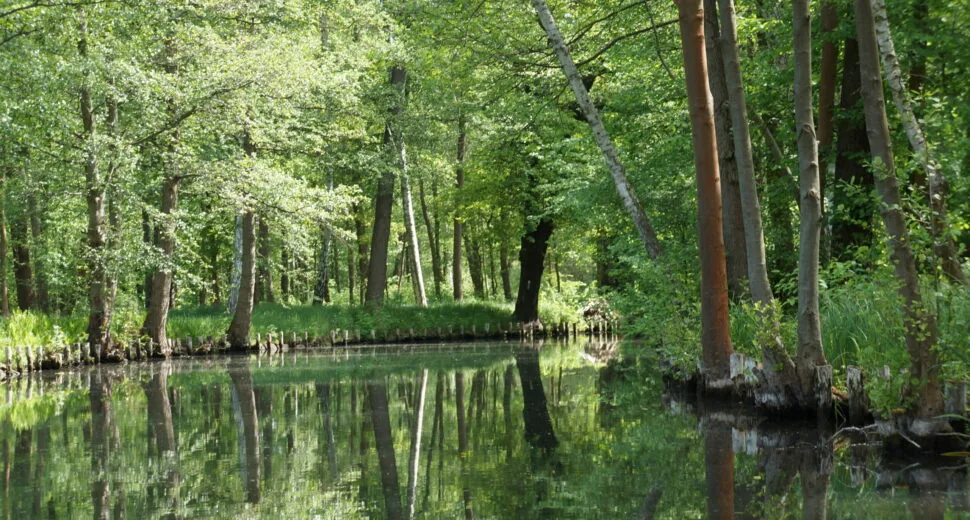
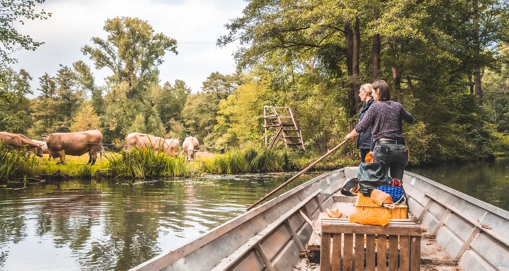

Der Hof
Ökologische Landwirtschaft
Mit dem Mutschenhof wollen wir ein Stück Kulturgut des Spreewalds erhalten. Deshalb ist es uns wichtig alte Traditionen weiterzuführen und mit neuer Technik zu vereinfachen. Doch das fahren mit dem Kahn zu unseren Ackerflächen und Wiesen bleibt bestehen. Das Transportieren der Rinder mit dem Kahn oder die Traktoren auf das jeweilige Ackerstück zu bringen war, ist und bleibt eine Herausforderung die es zu meistern gilt.

Mit der Natur arbeiten
Denn um diese magische Landschaft im Spreewald zu erhalten und sie auch für zukünftige Generationen nutzbar und wohnbar zu machen, ist es wichtig mit der Natur zu arbeiten, statt gegen sie. Kurz gesagt, unsere Arbeit richtet sich nach dem Spreewald.
Mit unser ökologisch und nachhaltigen Landwirtschaft verzichten wir auf chemisch-synthetische Pestizide und Düngemittel. Stattdessen kommen natürliche Alternativen wie Kompost, Gründüngung und biologische Schädlingsbekämpfung zum Einsatz. Damit möchten wir die Vielfalt von Pflanzen und Tieren fördern. Dies versuchen wir durch 3 Felderwirtschaft, Mischkulturen und den Erhalt von natürlichen Lebensräumen, was die Resilienz des Ökosystems stärkt, zu erreichen.
Der Erhalt und die Verbesserung der Bodenfruchtbarkeit stehen bei uns im Mittelpunkt. Dies wird durch organische Düngemittel, reduzierte Bodenbearbeitung und den Einsatz von Pflanzen, die den Boden auflockern, erreicht. Der Mist von unseren Rindern und Schweinen wird traditionell bzw. geht es auch nicht anders, auf unsere Ackerflächen mit dem Kahn gefahren und dort ausgeladen und verteilt. Das ist eine der größten und zeitlichen Herausforderungen, mit denen wir leben. Denn wenn im Winter die Fließe zufrieren, gibt es für uns keine Möglichkeit mit dem Kahn zu fahren und die Arbeit muss warten, bis die Fließe wieder frei sind.
Mit unserer ökologischen Sichtweise auf die Landschaft legen wir großen Wert auf die Gesundheit von Mensch, Tier und Umwelt. Unsere Produkte sind nachhaltig und wir sind bestrebt ein harmonisches Gleichgewicht zwischen Landwirtschaft, Umwelt und Gesellschaft zu schaffen.

Äcker auf Inseln
Ende März – Anfang April wird der Winterstau im Staubereich Lehde abgesenkt. Je nach Wetterlage können wir dann ab Ende April auf unsere Ackerflächen und mit der Bewirtschaftung anfangen.
Unsere Äcker bewirtschaften wir nach der 3 bzw. 4 Felderwirtschaft und der gesamte Ertrag kommt unseren Tieren zugute, sei es Kartoffeln, Mais, Kürbisse oder Getreide. Für unseren Eigenbedarf bauen wir Gurken, Zucchini, Bohnen, Kohl, Salat, Rhabarber und vieles mehr in unserem kleinen Bauerngarten an – selbstverständlich ebenfalls ganz natürlich.
Diese Art der Ackerbewirtschaftung bedeutet, dass auf dem Feld jedes Jahr die Pflanze wechselt bzw. es für ein Jahr brach liegt, um eine optimale Nährstoffversorgung des Bodens zu gewährleisten.
Um unsere kleinen Ackerstücke auf den verschiedenen Inseln, das nennt man hier im Spreewald „kleinteilige Landwirtschaft“, bewirtschaften zu können, müssen alle Gerätschaften mit dem Kahn transportiert werden.

Inselhüpfen, Heu und Ernte
Für das Umsetzen haben wir uns im Jahr 2018 extra einen sogenannten „Prahm“ anfertigen lassen. Früher hat man für den Transport von Traktoren einfach zwei Kähne zusammengebunden und auf ihnen Bohlen platziert. Aufgrund von neuen Vorschriften und der Tatsache, dass man bei dieser Variante zum Ausladen immer ein festes Ufer braucht (was nicht selbstverständlich ist), mussten wir etwas umdenken. Unser „Prahm“ ist ein großer Lastenkahn, der den Traktor auf jeder Wiese und jeden Acker ausladen kann. Wir veranstalten mit unserer Technik also ein richtiges „Inselhüpfen“.
Anfang Juni beginnt die Heuernte und dann steht auf dem Hof einen Moment die Zeit still. Der Fokus liegt dann auf dem Mähen der Wiesen und dem Pressen vom Heu. Auch hier ist es der zeitliche Aspekt, die Heuballen auf unsere Insel zu bringen, eine große Herausforderung. Mit einer Fuhre können bis zu 7 Heuballen im Kahn verladen werden.
Auch die Ernte von Getreide, Kürbissen und Kartoffeln erfolgt mit dem Kahn. Dies ist immer wieder eine kleine Herausforderung, die Technik mit dem Kahn zu verladen und eine körperliche Arbeit die Kürbisse unbeschadet vom Acker in den Kahn und vom Kahn auf dem Hof auszuladen, ohne dass sie beschädigt werden. Aber es macht immer wieder Freude mit vielen fleißigen Händen die Arbeit anzugehen. Wenn wir mit dem Kahn – randvoll mit Kartoffeln – über die Spree fahren, gibt es von den Touristen jedes Mal ganz erstaunte Blicke.

Der Winterstau
Im November kommt dann der Winterstau, das heißt die Spree wird angestaut und die Wiesen werden unter Wasser gesetzt. Der Winterstau ist für die Natur des Spreewalds ungeheuer wichtig. Auf den überschwemmten Wiesen laichen viele Fische und die Böden werden mit natürlichen Nährstoffen angereichert. Letzteres ist für uns Landwirte im Spreewald auch für eine gute Ernte unerlässlich.
Mit Beginn des Winterstaus ist es für uns nicht mehr möglich auf die Flächen zu kommen und die Arbeit muss dann bis zum nächsten Frühjahr warten.